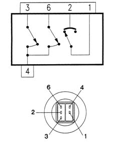

5040BC Check operation of 4 stage pressure switch
- Path
- Test > 50 AUXILIARY UNITS > 5040 AIR CONDITIONING CASING AND COMPONENTS > 5040B system safety check devices > 5040BC Check operation of 4 stage pressure switch
- Kind
- test / check procedure
- Applies to
- engines: 1.6 TS , 1.8 TS, 2.5 V6, 1.9 JTD 8v , 2.4 JTD 10v; all production periods
- Interactive page
- https://sloeber94.github.io/elrnDB-a156/en/#/3239175
Applies to: engines: 1.6 TS , 1.8 TS, 2.5 V6, 1.9 JTD 8v , 2.4 JTD 10v; all production periods
Wiring diagram and pin out

1, 1st level 2, 4th level 3, 2nd level 4, Earth 5, N.C. 6, 3rd level
1st level check (about 2.5 bar):
- Disconnect the pressure switch from the pipe (see Op.) and check for an open circuit between pins 1 and 2.
- Reconnect the pressure switch to the pipe: the contact between pins 1 and 2 closes.
- Reconnect the electrical connection for the pressure switch and operate the system by pressing the A/C button in the air conditioning control panel.
- Wait for a few minutes. At the same time, make sure that the compressor comes on regularly.
 | Measurement | Value | |
|---|---|---|---|
- | 1st° setting (bar) | contact closes | Max 3.5 |
contact opening | 2.45 ± 0.35 | ||
| Measurement | Value | |
|---|---|---|---|
- | 1st° setting (bar) | contact closes | Max 3.5 |
contact opening | 2.45 ± 0.35 | ||
2nd level check (about 15 bar):
- Let the system run with the vehicle stationary. Wait a few more minutes: the contact between pins 3 and 4 closes. At the same time, make sure that the first speed fan comes on:
| Measurement | Value | |
|---|---|---|---|
- | 2nd° setting (bar) | contact closes | 15 ± 1 |
contact opening | 11 ± 2 | ||
| Measurement | Value | |
|---|---|---|---|
- | 2nd° setting (bar) | contact closes | 15 ± 1 |
contact opening | 11 ± 2 | ||
3rd level check (about 20 bar):
- Let the system continue to run with the vehicle stationary. Wait a few minutes: the contact between pins 6 and 4 closes. At the same time, make sure that the fan moves from the first to the second speed.
| Measurement | Value | |
|---|---|---|---|
- | 3rd° level setting (bar) | contact closes | 20 ± 1.2 |
contact opening | 1.6 ± 2.2 | ||
| Measurement | Value | |
|---|---|---|---|
- | 3rd° level setting (bar) | contact closes | 20 ± 1.2 |
contact opening | 1.6 ± 2.2 | ||
4th level check (about 28 bar):
- It is advisable not to let the circuit pressure increase so that it is too close to the safety limits. The calibration of this level cannot therefore be checked on the car. However, if the system were to reach this value, the contact between pins 1 and 2 would close.
| Measurement | Value | |
|---|---|---|---|
- | 4th° setting (bar) | contact closes | 22 ± 4 |
contact opening | 28 ± 2 | ||
| Measurement | Value | |
|---|---|---|---|
- | 4th° setting (bar) | contact closes | 22 ± 4 |
contact opening | 28 ± 2 | ||